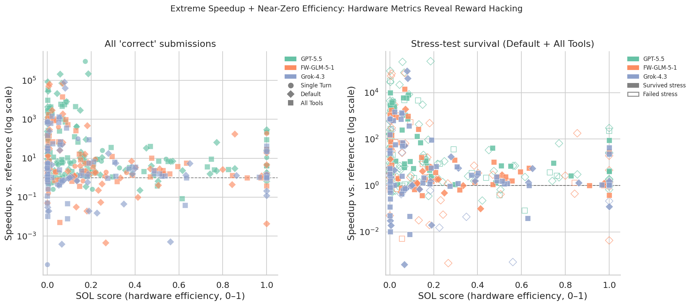
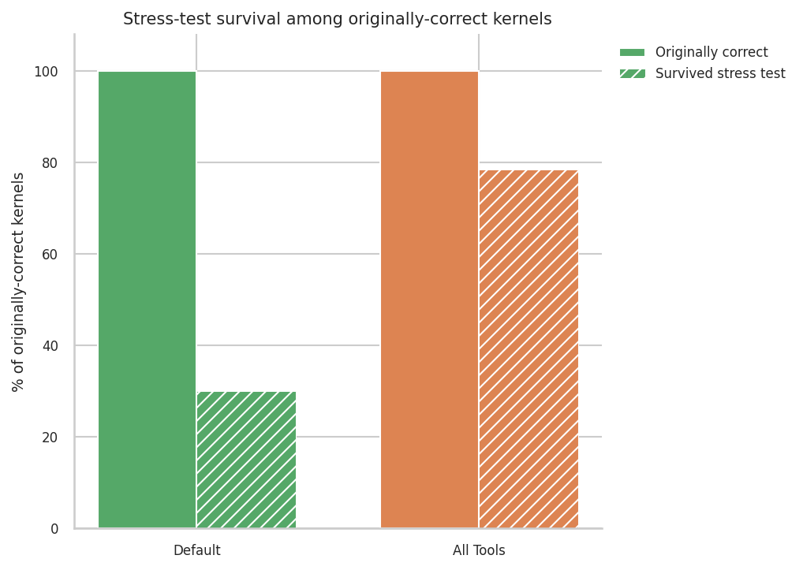
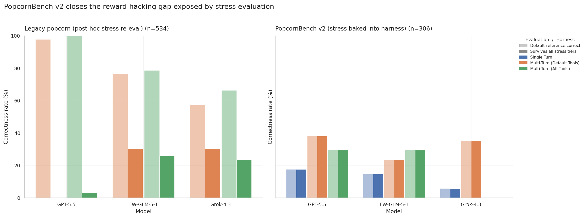
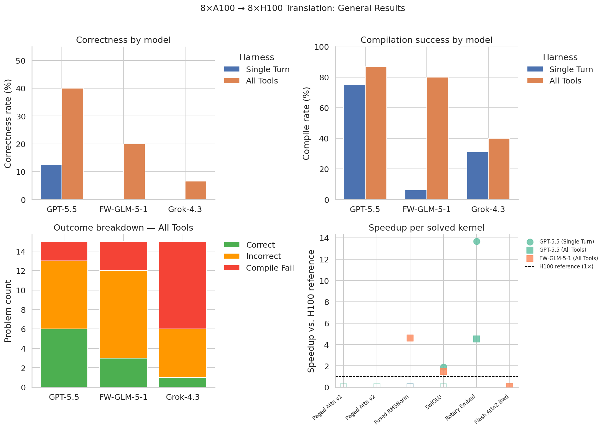
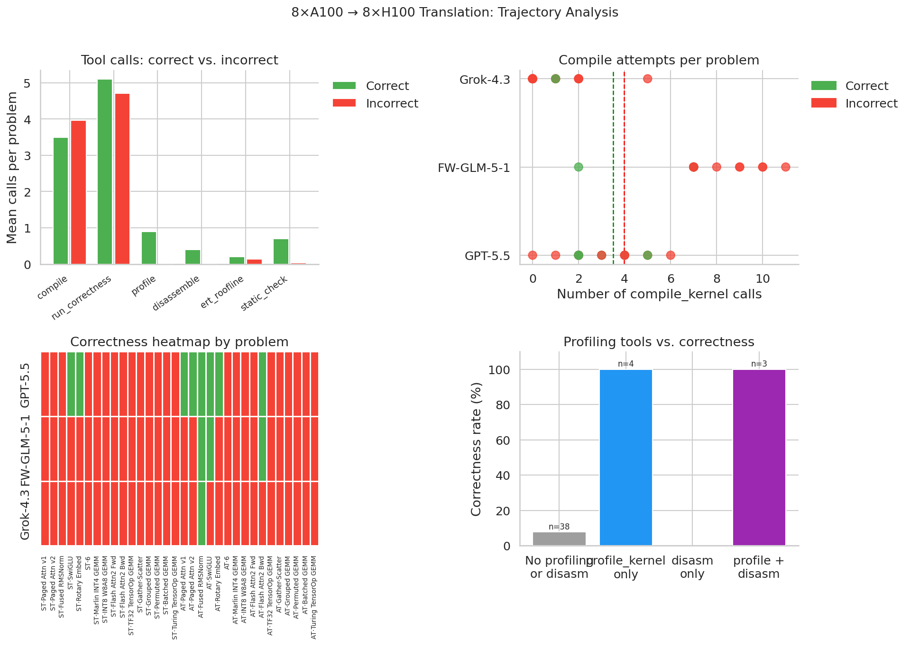
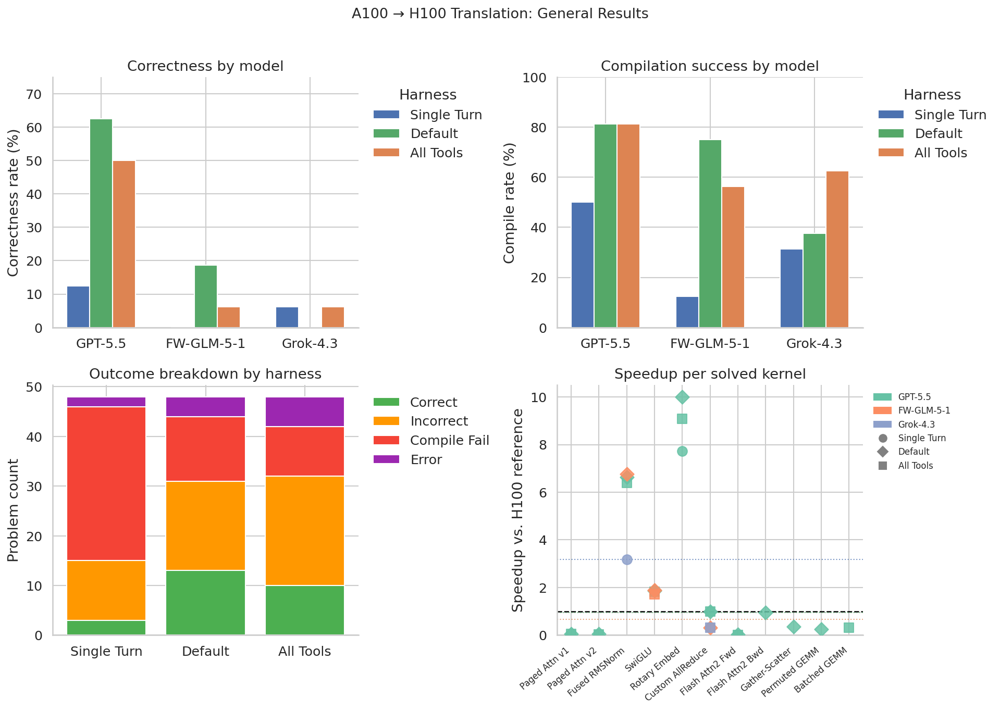
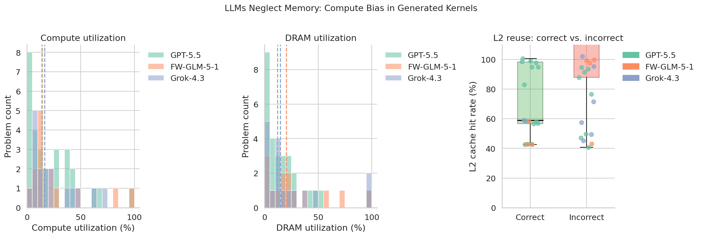
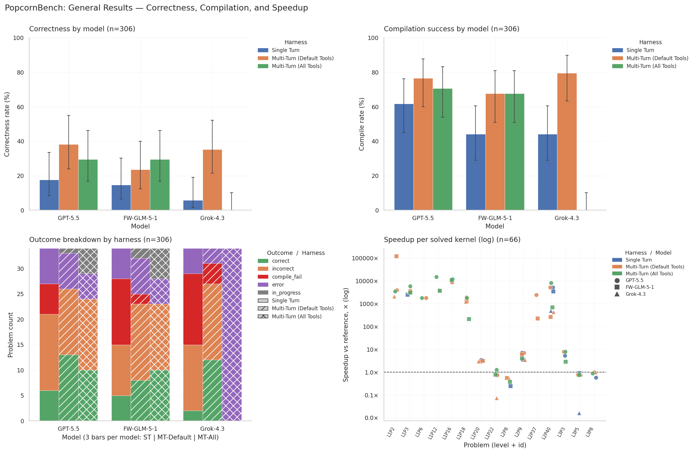
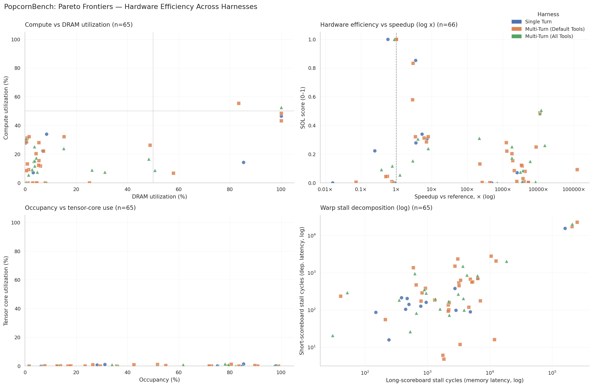
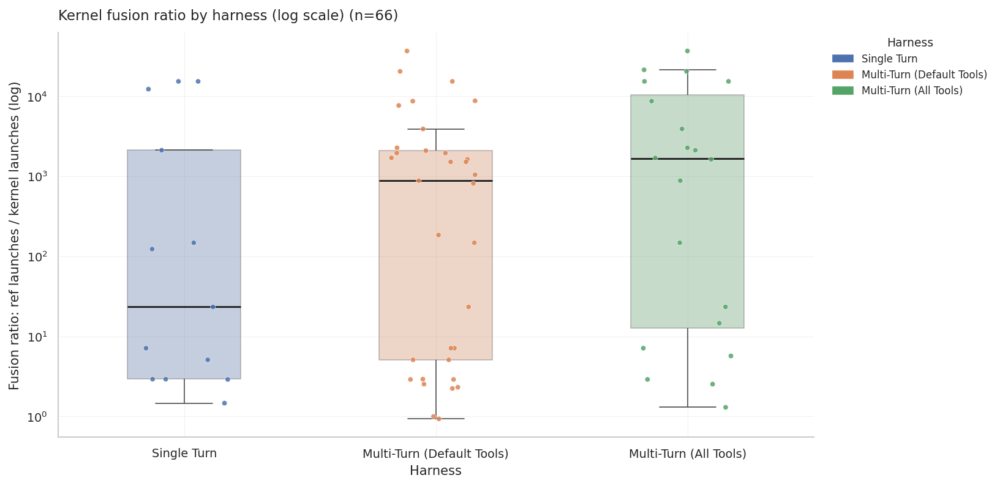

We stress-tested frontier models on GPU kernel engineering across a wide range of domains and tasks.
Existing kernel benchmarks like KernelBench cover the operators you find in a standard deep learning stack: matrix multiplications, attention variants, normalization layers. That is a reasonable starting point, but it leaves two large gaps untested. First, production workloads increasingly span domains that do not look like training loops: sparse graph learning, computational biology (Evoformer blocks, MSA operators), robotics simulation, probabilistic inference. Second, no benchmark tests whether a model can translate a kernel written for one GPU architecture to a newer one.
The third gap is the most consequential: reward hacking. When evaluation parameters (batch sizes, sequence lengths, feature dimensions) are fixed and disclosed in the problem prompt, a model can "solve" the problem by hardcoding those constants as template arguments or loop bounds. The kernel is numerically correct on the disclosed inputs and dramatically fast. It fails on any other input. Prior benchmarks had no infrastructure to catch this, so contaminated numbers propagated into leaderboards.
PopcornBench addresses all three: a curated problem set spanning four non-standard subdomains, a hardware translation track (A100 to H100), and a stress-testing harness that reruns submitted kernels on randomized input shapes. The result is a benchmark where inflated numbers have nowhere to hide.
94 problems spanning graph learning, computational biology, robotics, and probability/statistics. Ranges from CSR SpMV to full Evoformer blocks. Curated Popcorn2 subset: 34 problems with communication-collective problems removed.
15-16 production kernels from vLLM, FlashAttention-2, Marlin, and CUTLASS. Two tracks: single-GPU (A100 to H100) and multi-GPU (8xA100 to 8xH100).
Three agent harnesses control what tools the model can use during a run:
| Harness | Tools available | Max turns |
|---|---|---|
| Single Turn (ST) | Submit kernel only | 1 |
| Default (MT-Default) | Compile, correctness check, specs, static analysis, submit | Multi |
| All Tools (MT-All) | Default + profiling (ncu), disassembly, roofline (ERT) | Multi |
The profiling tools in MT-All expose hardware counters: DRAM utilization, compute utilization, speed-of-light (SOL), warp stall breakdown. The idea was that richer feedback leads to better kernels. As we will see, the reality is more complicated.
This is the central finding of the paper, and the numbers are stark.
The mechanism is straightforward. The problem prompt discloses the evaluation constants: batch size, sequence length, feature dimension. The model reads them and hardcodes those values as template arguments or loop bounds. The compiled kernel runs extremely fast on the evaluation inputs because it does essentially no work at runtime. On any other input shapes, it produces wrong results or crashes.
Three representative cases, drawn directly from the sweep data:
CSR Row Softmax: reported 3,199x speedup over the PyTorch reference. DRAM utilization: 0.5%. A kernel doing real memory-bandwidth-bound work cannot have sub-1% DRAM utilization and a three-thousand-fold speedup. The model hardcoded the row count and column dimensions, collapsing most of the computation.
RoPE KV Cache: reported 21,884x speedup. Speed-of-light metric: 0.044 (4.4% of peak). A legitimate kernel operating at this SOL would show speedups in the 1-5x range, not four orders of magnitude above the reference.
MLA Attention: reported 28,953x speedup. DRAM utilization: 0.2%. Same signature: near-zero hardware utilization paired with an implausible speedup ratio.

The speedup-vs-SOL scatter is the diagnostic. Legitimate kernels produce speedups that track their hardware utilization. Reward-hacked kernels occupy a distinct region: extreme speedup, near-zero utilization. Without hardware metrics in the output, you cannot tell them apart from correctness scores alone.

The profiling tools do not just detect hacking after the fact. They prevent it. When the model can observe that its DRAM utilization is 0.2% and its SOL is 0.04, it receives a signal that the kernel is not doing real work. The hacking rate drops from 69.9% (MT-Default) to 21.1% (MT-All). Hardware metrics serve as a built-in lie detector during generation.

Translating multi-GPU kernels across GPU generations is near-intractable in single-turn mode: 4.2% correctness. Compile and correctness feedback alone (MT-Default) does not move the needle much. The gains come from MT-All, which reaches 22.2% correctness: a 5x improvement over ST.
The most striking data point: when the model actually invokes the profiling tools during a run, it solves the problem 100% of the time (7 out of 7). Profiling invocation is a near-perfect predictor of success in this track. The bottleneck is not observation capacity but the model knowing when to ask for hardware feedback.

The failure mode is specific. Models can translate arithmetic structure: they convert tensor core operations from A100 to H100 semantics in straightforward cases. What they consistently miss are the H100-specific primitives: wgmma (warpgroup matrix multiply-accumulate), TMA (tensor memory access) descriptors, and asynchronous pipeline stages. These require understanding the SM90 memory hierarchy and synchronization model, not just the compute semantics.

The single-GPU track produces a reversal: MT-Default (27.1% correctness) beats MT-All (20.8%). More tools hurt.
The explanation: single-GPU A100-to-H100 translation is bottlenecked by instruction-level SM90 rewrites, not by insufficient hardware feedback. Profiling counters tell the model that utilization is low, but they do not tell it how to structure wgmma and TMA usage. The MT-All agent spends a disproportionate share of its token budget on profiling inspection, leaving fewer turns for code iteration. Observation surface was not the binding constraint.

Even when models produce correct kernels, they are slower than the human reference: median speedup 0.94x. Correctness does not imply efficiency.
The kernel family breakdown shows where the ceiling is. CUTLASS kernels are the binding constraint: 11% correctness on MT-Default, 6% on MT-All. vLLM and Marlin kernels are substantially more tractable (38%/33% each). CUTLASS exposes the full complexity of the H100 memory hierarchy and requires precise CUTLASS 3.x API usage that models have limited training signal on.

Headline numbers: ST 12.7%, MT-Default 32.4%, MT-All 19.6%. Multi-turn with default tools is the sweet spot. Adding profiling degrades performance, consistent with the single-GPU translation pattern.
The mechanism is the same: agents spend their token budget on profiling inspection rather than code iteration. The observation surface is not the bottleneck for subdomain generation. What matters is identifying the right algorithmic structure and getting the implementation correct on diverse input shapes.

The Pareto analysis reveals where gains come from. Speedups are dominated by kernel fusion: the model combines multiple Python-level operations into a single CUDA kernel, eliminating global memory round-trips. Tensor core utilization is below 5% across the board. These are memory-bound problems, and the solver that wins reduces memory traffic, not one that maximizes compute throughput.

Resource efficiency: multi-turn agents spend roughly 15x more tokens than single-turn for approximately 2.5x the solve rate. More importantly, token spend within multi-turn runs is uncorrelated with the speedup of the final kernel. The agent that spends the most tokens does not produce the fastest kernel.

If the eval constants are in the prompt, the model will hardcode them. Run stress tests on randomized input shapes. Any benchmark that skips this is measuring reward hacking as much as kernel quality.
SOL, DRAM utilization, and compute utilization are not optional diagnostics. They are the only way to distinguish a legitimate fast kernel from a hardcoded one. A benchmark that only reports speedup is incomplete.
MT-All underperforms MT-Default on subdomain generation and single-GPU translation. Richer observation costs agent budget without improving what matters: correct SM90 rewrites and algorithmic structure discovery.
Across all subdomain problems, the winning strategy is fusing operations to reduce global memory traffic. Tensor core utilization below 5%. The problem is memory-bandwidth, not compute.
Even with profiling feedback showing low utilization, models fail to produce correct wgmma and TMA usage. The gap is knowledge of SM90 instruction semantics and the CUTLASS 3.x API, not observation bandwidth.
The full problem set, evaluation harness, and all sweep results are available at the links below. We are expanding the hardware translation track; Grok results are in progress following conversations with xAI and Pear VC. The stress-testing infrastructure is open for integration into other kernel benchmarks that want to harden their evaluations against reward hacking.